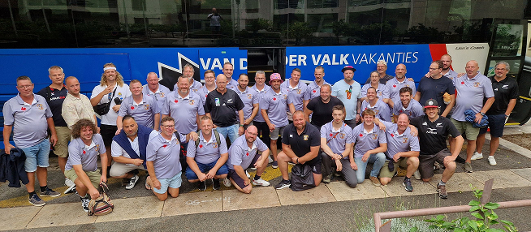
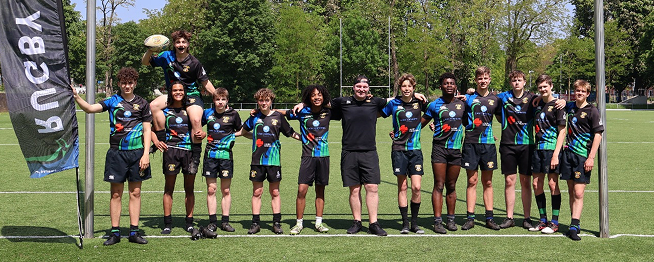
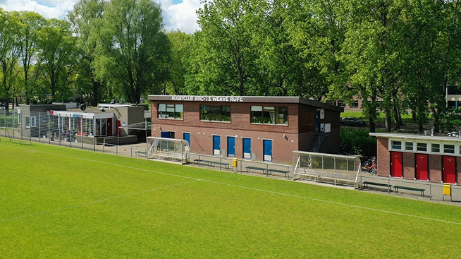

Onze ervaren trainers
Bij WRC Te Werve geloven we dat een goede trainer het verschil maakt. Onze ervaren en gepassioneerde
trainers helpen spelers van alle niveaus om zich te ontwikkelen, zowel technisch als fysiek.
Met aandacht voor respect, discipline en spelplezier begeleiden zij zowel jeugd als senioren naar
een hoger niveau. Of je nu net begint of al ervaring hebt, bij ons krijg je de juiste coaching om je
rugbyvaardigheden te verbeteren.

Gezellige clubfamilie
WRC Te Werve is meer dan alleen een rugbyclub – we zijn een hechte familie. Onze vereniging verwelkomt
spelers van alle leeftijden en achtergronden, inclusief de expatgemeenschap in de regio. Bij ons draait
het niet alleen om de sport, maar ook om het plezier en de vriendschappen die ontstaan op en naast het veld.
We organiseren regelmatig sociale evenementen zoals teamavonden, barbecues en deelname aan het jaarlijkse
beachrugbytoernooi op Ameland.

Toplocatie in Den Haag
Onze club bevindt zich op een centrale locatie in Den Haag, goed bereikbaar voor zowel lokale
spelers als internationale expats. Met een rijke historie die teruggaat tot 1953 en een moderne
rugbyfaciliteit aan de Beresteinlaan, bieden we een uitstekende plek om de sport te beoefenen.
Of je nu op zoek bent naar een uitdagende competitie of gewoon lekker wilt trainen, bij WRC Te
Werve ben je aan het juiste adres.
